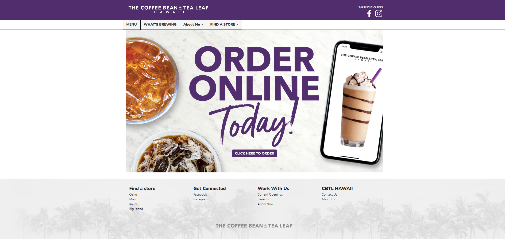

Modular UI Frameworks
04 Oct 2023
For the past few years of my academic engineering journey, I’ve been actively practicing something my advisor taught me: the HK method. It’s not anything official, in fact, I don’t even know what it stands for, but I do know that he preaches it A LOT. The gist of the method is that every problem can become modular. This isn’t a new thought, in fact pretty much everyone knows it. But until it was ingrained into my head, I never thought much of it. To me, breaking down a problem into smaller steps seemed like a waste of time. Why do 5 tasks, when I can do 1 and be done with it?
Why Go Modular?
This mentality was short-lived for me as I progressed to more increasingly difficult tasks. It made me realize that this should be the basis of every complex design, websites included. It may seem tedious to do the extra mundane steps of performing seemingly unnecessary steps, but when you start building upon complexity, it really helps.
For example, imagine a website with just a header and a paragraph of text. You can easily create an html script to build this website in two lines. Just add the header and paragraph into the body tags and you’re done? Why go through the modular steps of using bootstrap to create a container, followed by rows, and then finally columns, just to store a header and paragraph in them? In the end, the page looks exactly the same as if you gave your original h1 and p tags some margins. But trust me, it’s worth it.
Recreation Task
Take your simple website, and now raise it to the following:
I guarantee that if you try to use html and css to go straight to the final product, you will not have a good time. **Everything is better as modules**. That is precisely the motto that motivated me to learn and practice using bootstrap to recreate this webpage this week.
Bootstrap is modular because each section of the page can be broken down into containers, rows, and/or columns. Containers are used to have the library take care of annoying spacing for you. I can speak from experience when I say spacing is the #1 most frustrating thing about coding in HTML/CSS. Nothing ever works as intended, and the amount of tag clutter on the screen only makes it worse. By using bootstrap, I was able to break the website into 3 container sections, each with the same type of wrapper class. This wrapper class allowed me to replicate the 960 px width that the original website uses (as the content doesn’t fill the screen no matter what screen size your on). The container itself took care of evenly spacing everything for me, without the use of stylesheets. Each container had a row of columns, where each column represented an item, like one of the navbar texts or dropdowns, and the rows represented the horizontal spacing of those items.
By grouping content, it allowed me to adjust sizes and properties (e.g font-size, background colors, etc.) or individual elements, as well as elements as a group. I could do this directly from the class attribute, without making too many css style objects. In addition, if I needed to use the same type of container, but fill it with more rows, or different columns, I could just copy the first container, and change a few of the class attributes to account for those changes. This is the truly powerful advantage of using bootstrap, or any UI framework for that matter. Here is the finished recreation:

Results
In the end, I was unable to fully recreate the website I chose to work on. However, this was not necessarily a bad thing. One of the requirements for this assignment was that the website we chose to recreate could not be made using the bootstrap UI. This website was local, so it was made kind of messily, with base HTML/CSS. I think that is the reason it was so hard to recreate. A lot of the style of the site involved manually assigned heights and widths to the wrapper containers of the page. This made it hard to recreate in bootstrap, because manual sizing is rarely used, as the power of bootstrap comes from how it resizes based on screen sizes. I had to make the containers constantly sized using CSS to account for the original website, but it made it not as fluid and clean-looking in my opinion. Basically, I thought my version of the website looked better using bootstraps built in spacing, but I had to destroy it to meet the assignment requirements.